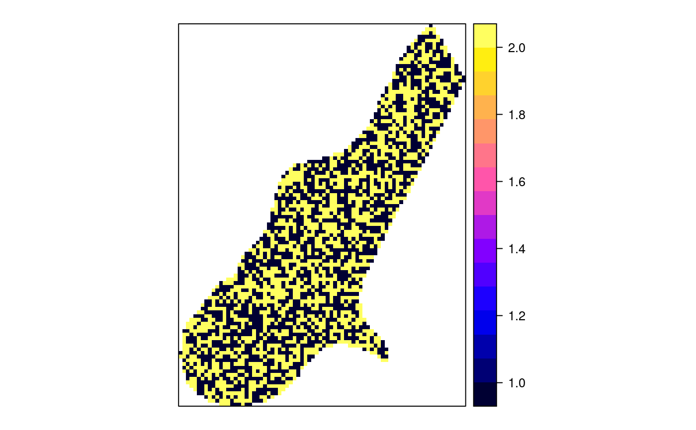
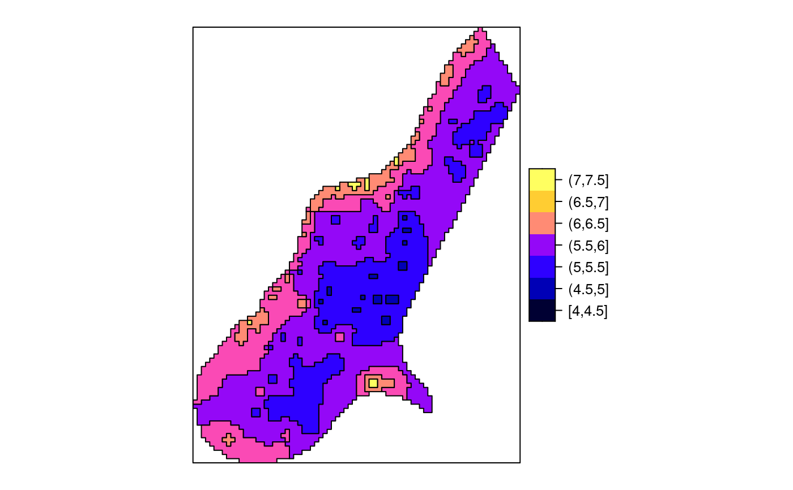
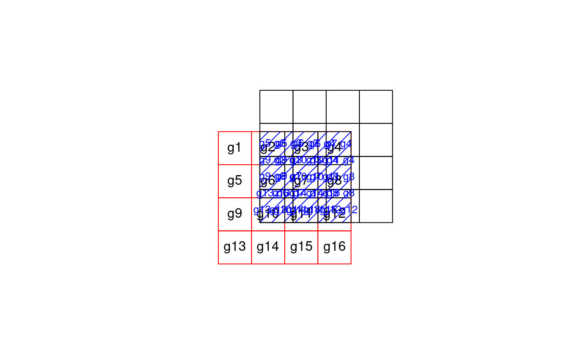
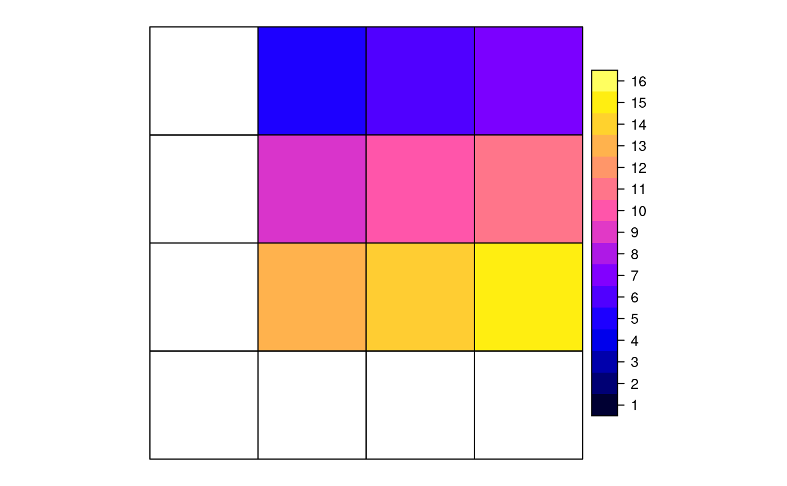

aggregate.Rdspatial aggregation of thematic information in spatial objects
# S3 method for Spatial aggregate(x, by = list(ID = rep(1, length(x))), FUN, ..., dissolve = TRUE, areaWeighted = FALSE)
| x | object deriving from Spatial, with attributes |
|---|---|
| by | aggregation predicate; if |
| FUN | aggregation function, e.g. mean; see details |
| ... | arguments passed on to function |
| dissolve | logical; should, when aggregating based on attributes, the
resulting geometries be dissolved? Note that if |
| areaWeighted | logical; should the aggregation of |
The aggregation of attribute values of x either over the
geometry of by by using over for spatial matching,
or by attribute values, using aggregation function FUN.
If areaWeighted is TRUE, FUN is ignored and the
area weighted mean is computed for numerical variables, or if all
attributes are factors, the area dominant factor level (area
mode) is returned. This will compute the gIntersection
of x and by; see examples below.
If by is missing, aggregates over all features.
FUN should be a function that takes as first argument a
vector, and that returns a single number. The canonical examples
are mean and sum. Counting features is obtained when
summing an attribute variable that has the value 1 everywhere.
uses over to find spatial match if by is a
Spatial object
data("meuse") coordinates(meuse) <- ~x+y data("meuse.grid") coordinates(meuse.grid) <- ~x+y gridded(meuse.grid) <- TRUE i = cut(meuse.grid$dist, c(0,.25,.5,.75,1), include.lowest = TRUE) j = sample(1:2, 3103,replace=TRUE) if (FALSE) { if (require(rgeos)) { # aggregation by spatial object: ab = gUnaryUnion(as(meuse.grid, "SpatialPolygons"), meuse.grid$part.a) x = aggregate(meuse["zinc"], ab, mean) spplot(x) # aggregation of multiple variables x = aggregate(meuse[c("zinc", "copper")], ab, mean) spplot(x) # aggregation by attribute, then dissolve to polygon: x = aggregate(meuse.grid["dist"], list(i=i), mean) spplot(x["i"]) x = aggregate(meuse.grid["dist"], list(i=i,j=j), mean) spplot(x["dist"], col.regions=bpy.colors()) spplot(x["i"], col.regions=bpy.colors(4)) spplot(x["j"], col.regions=bpy.colors()) } } x = aggregate(meuse.grid["dist"], list(i=i,j=j), mean, dissolve = FALSE) spplot(x["j"], col.regions=bpy.colors())if (require(gstat) && require(rgeos)) { x = idw(log(zinc)~1, meuse, meuse.grid, debug.level=0)[1] spplot(x[1],col.regions=bpy.colors()) i = cut(x$var1.pred, seq(4, 7.5, by=.5), include.lowest = TRUE) xa = aggregate(x["var1.pred"], list(i=i), mean) spplot(xa[1],col.regions=bpy.colors(8)) }#>#>#> #> #> #>if (require(rgeos)) { # Area-weighted example, using two partly overlapping grids: gt1 = SpatialGrid(GridTopology(c(0,0), c(1,1), c(4,4))) gt2 = SpatialGrid(GridTopology(c(-1.25,-1.25), c(1,1), c(4,4))) # convert both to polygons; give p1 attributes to aggregate p1 = SpatialPolygonsDataFrame(as(gt1, "SpatialPolygons"), data.frame(v = 1:16, w=5:20, x=factor(1:16)), match.ID = FALSE) p2 = as(gt2, "SpatialPolygons") # plot the scene: plot(p1, xlim = c(-2,4), ylim = c(-2,4)) plot(p2, add = TRUE, border = 'red') i = gIntersection(p1, p2, byid = TRUE) plot(i, add=TRUE, density = 5, col = 'blue') # plot IDs p2: ids.p2 = sapply(p2@polygons, function(x) slot(x, name = "ID")) text(coordinates(p2), ids.p2) # plot IDs i: ids.i = sapply(i@polygons, function(x) slot(x, name = "ID")) text(coordinates(i), ids.i, cex = .8, col = 'blue') # compute & plot area-weighted average; will warn for the factor ret = aggregate(p1, p2, areaWeighted = TRUE) spplot(ret) # all-factor attributes: compute area-dominant factor level: ret = aggregate(p1["x"], p2, areaWeighted = TRUE) spplot(ret) }#> Warning: for factor aggregation, provide factor only data#> Warning: ‘*’ not meaningful for factors